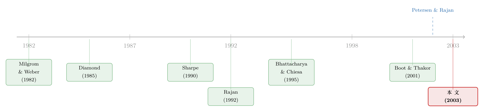

同一场技术革命，为什么把利率推向了两个相反的方向？
本文读的是 Hauswald & Marquez (2003, Review of Financial Studies)：信息技术 (IT) 进步对金融竞争的影响，取决于它改善的是哪一个维度——如果它让银行更会处理信息，市场反而更不竞争、利率更高、银行更赚钱；如果它让信息更易扩散，市场才真正变得更竞争、利率更低。同一场技术革命，被拆成了方向相反的两只手。
1 一个几乎人人都信、却可能完全错的判断
先说一个几乎成为常识的判断。
九十年代末到本世纪初，关于「IT 会怎样改造金融」的讨论铺天盖地。《经济学人》的专题、《哈佛商业评论》上 Evans 与 Wurster (1997) 的雄文，口径出奇地一致：互联网和信息技术会降低进入壁垒、让信息变得唾手可得，于是银行靠「关系」赚的那点垄断租金会被侵蚀殆尽，市场会更竞争，借款人会享受到更低的利率。技术进步，似乎天然站在消费者那一边。
这个判断听上去无懈可击。可 Hauswald 和 Marquez 在这篇 2003 年的 RFS 论文里，做了一件很「扫兴」的事：他们说，这话只对了一半，而且你事先根本不知道是哪一半。
问题出在哪里？出在「IT 进步」这四个字，其实被偷偷塞进了两件完全不同的事。
第一件，是更强的信息处理能力 (information processing)——银行靠评分模型、靠算力、靠人力，把同样一份原始资料挖得更深、判得更准。 第二件，是更易的信息获取 (information dissemination / spillovers)——别人辛苦搜集的信息，通过网络、通过外溢，免费或近乎免费地落到了你手上。
本文最核心的洞见，就是把这两件事掰开，然后证明：它们对信贷市场竞争的作用，符号相反。把它们混为一谈，你对「技术会让金融更便宜还是更贵」这个问题，就永远得不到确定的答案。
接着，一个自然的问题是：凭什么这两个维度会指向相反的方向？要把这件事讲透，得先有一个足够简单、又抓住要害的模型。这篇论文最漂亮的地方，恰恰就是这个模型本身。
2 一个只有两家银行的信贷市场
我们从设定开始，一步步搭。
有一个连续的借款人群体，测度为 1。每个借款人手里有一个项目，需要投入 \$1，到期产生现金流 \(X\)：以概率 \(p_\theta\) 拿到 \(R\)，以概率 \(1-p_\theta\) 颗粒无收。这里 \(\theta \in \{l, h\}\) 是借款人的类型，好类型成功概率更高，\(p_h > p_l\)。关键假设是：
$$p_l R < 1 < p_h R$$
也就是说，给好借款人放贷是有效率的、给坏借款人放贷则是亏的。但类型 \(\theta\) 谁都不知道——连借款人自己也不知道。市场只知道一个先验：好类型的比例是 \(q\)。再令平均成功概率 \(\bar p \equiv q p_h + (1-q)p_l\)，并假设 \(\bar p R > 1\)，所以「闭着眼睛放一笔贷」事前是划算的。
市场上有两家银行抢这批客户。这是本文设定里最聪明的一刀：
- 一家叫内部银行 (inside bank)，它有一套筛选技术 \(\phi\)，能对借款人做信用评估、拿到一个私有信号；
- 另一家叫外部银行 (outside bank)，它没有这套技术，因此始终是无信息的 (uninformed)。
内部银行筛选后，得到信号 \(\eta \in \{l, h\}\)，其准确度为
$$\Pr(\eta=h \mid \theta=h) = \phi = \Pr(\eta=l \mid \theta=l)$$
而犯错的概率是 \(\Pr(\eta=h\mid\theta=l)=1-\phi=\Pr(\eta=l\mid\theta=h)\)。
那么 \(\phi\) 从哪里来？这就是整篇论文的题眼了。作者把它写成：
$$\phi = \frac{1 + Ie}{2}, \qquad I \in (0,1), \; e \in [0,1]$$
这里 \(I\) 是信息处理技术的状态，\(e\) 是银行投入的努力。注意两点：第一，\(\phi \ge \tfrac12\)，所以信号总是有用的；第二，\(I\) 和 \(e\) 是互补的——技术越好，努力越值钱（\(Ie\) 这个乘积形式就把这件事钉死了）。努力是有成本的，记作 \(c(e)\)，满足 \(c'>0,\, c''>0,\, c'(0)=0,\, c'(1)=\infty\)。
时序很干脆：内部银行先决定要不要筛、筛多努力（选 \(e\)）；然后两家银行同时报利率；借款人最后选利率最低的那家接受。
到这里，舞台已经搭好。接下来真正关键的一步，是求解这场利率竞争的均衡。
3 赢者的诅咒，与一条出奇简洁的利润公式
为什么不能有纯策略均衡？
直觉来自赢者的诅咒 (winner's curse)。设想外部银行报了一个利率并被借款人接受了——这意味着什么？意味着内部银行没有用更低的利率把这个客户抢走。而内部银行是有信息的，它不抢，往往是因为它筛出了坏信号。于是「我中标了」这件事本身，就是个坏消息：被我赢到的，多半是块烂肉。任何确定的报价都会被对手针对，所以均衡只能是混合策略——双方在一段利率区间上随机报价。这套逻辑在拍卖文献里是标准结论（Engelbrecht-Wiggans, Milgrom, and Weber, 1983；von Thadden, 1998）。
命题 1 给出了均衡：纯策略不存在，存在唯一的混合策略均衡 \(\{F_i, F_u\}\)；无信息的外部银行期望利润为零；而内部银行在观测到信号之前的期望利润（扣掉努力成本）是一个干净得惊人的表达式：
把 \(\phi=(1+Ie)/2\) 代进去，\(2\phi-1=Ie\)，于是内部银行的期望利润进一步简化为
$$E[\pi(\eta)] - c(e) = \frac{1}{\bar p}(p_h - p_l)\,q(1-q)\,Ie - c(e)$$
这个式子值得多盯一会儿。它说，内部银行的全部租金，只依赖四样东西：事前借款人质量 \(\bar p\)、异质性 \(p_h-p_l\)、类型分布 \(q\)，以及筛选技术 \(\phi\)（也就是 \(Ie\)）。所有的市场结构、所有的竞争结果，最后都浓缩进了这么短的一行。这也是作者自己最得意的贡献之一——一个简单、可处理的非对称信息竞争模型，简单到你可以直接对它求导。
那就求导。
4 第一只手：更会处理信息，反而让市场更不竞争
我们先动 \(I\)。
从上式立刻看出 \(\partial E[\pi]/\partial I > 0\) 且 \(\partial E[\pi]/\partial e > 0\)：处理能力越强、努力越多，内部银行越赚钱。原因不难想——技术变好，拉大的是内部银行相对外部银行的信息优势。外部银行不但没沾光，反而更惨：\(I\) 越高，它面对的逆向选择问题越严重。
但银行赚得多，未必等于借款人吃亏——说不定只是因为筛选更精准、把坏客户挡在了门外。所以真正要问的是：借款人实际付的利率，随 \(I\) 上升还是下降？
借款人付的是 \(\min\{r_i, r_u\}\)。作者证明（引理 1）：内部银行和外部银行的混合策略分布 \(F_i\)、\(F_u\) 都随 \(I\) 下移，于是最低报价的分布 \(F(\hat r)\) 也随 \(I\) 下移。结合 \(E[\hat r] = \int_{\underline r}^{R}[1-F(r)]\,dr + \underline r\)，立刻得到——
命题 2：期望利率 \(E[\hat r]\) 随处理能力 \(I\) 递增。
这就是第一个反转。更强的信息处理能力，不是抹平竞争，而是加剧了银行之间的信息鸿沟，把市场变得更不竞争、利率更高。 机制有两层：一层是 \(I\) 直接抬高了筛选的回报；另一层是赢者诅咒——只有一家银行有信息，无信息的那家面对更大的诅咒，报价更保守（它甚至只以 \(F_u(R)<1\) 的概率出价，且这个概率随 \(I\) 下降），而有信息的那家见状也乐得收着点报，于是利率被一起推高。
还没完。\(I\) 和 \(e\) 互补，意味着 \(\partial^2 E[\pi]/\partial I\,\partial e>0\)：技术变好，努力的边际回报也变高。于是有——
推论 1：最优筛选努力 \(e^*\) 随 \(I\) 递增。
把一阶条件 \(\tfrac{1}{\bar p}(p_h-p_l)q(1-q)I - c'(e^*)=0\) 对 \(I\) 用隐函数定理求导，得到
$$\frac{\partial e^*}{\partial I} = \frac{(1/\bar p)(p_h - p_l)\,q(1-q)}{c''(e^*)} > 0$$
这是一个自我强化的循环：技术越好 → 努力回报越高 → 银行越卖力筛选 → 信息优势越大 → 利率被进一步推高。这恰好给「IT 进步在银行业里放大了人力资本价值」（Wilhelm, 2001）提供了一个理论对应物。
（顺带一提，这条「信息优势是护城河」的逻辑，在后续文献里被反复打磨——比如当外资银行进入时，本地银行手里反而只剩下被逆向选择筛剩的坏客户，可参见《银行的「信息」，凭什么是一道护城河？》。）
5 第二只手：信息一外溢，故事就反了过来
到这里，"技术让金融更贵"似乎成了铁律。但作者紧接着抛出另一个维度。
设想技术进步带来的不是更强的处理能力，而是信息更容易扩散：内部银行辛苦搜集到的东西，有一部分会迅速泄漏出去，变成所有人都能免费看到的公共信号 (public signal)。作者用一个外部银行能无成本观测到的公共信号 \(\eta_p \in \{l, h\}\) 来刻画这件事，其准确度由一个参数 \(t\) 决定：\(t\) 取最低值时公共信号毫无信息含量（准确度恰为 \(\tfrac12\)），\(t\) 越大，公共信号越精准。
于是反转出现了。公共信号让外部银行不再是睁眼瞎，抹平了竞争双方的信息落差：外部银行敢更激进地报价，借款人也更难被内部银行「俘获」。结果是竞争加剧、利率下降、借款人受益。这正好就是《经济学人》和 Evans-Wurster 当年预言的那个世界。
但天下没有白来的午餐。信息外溢在压低利率的同时，也削弱了搜集信息的回报：既然辛苦筛出来的东西很快会被对手白嫖，内部银行为什么还要费劲去筛？于是外溢反过来打击了银行的筛选激励。
把两只手并在一起看，本文的核心命题就完整了：
处理能力 (\(I\)) ↑ ⟹ 信息鸿沟变宽 ⟹ 利率 ↑、银行利润 ↑、筛选努力 ↑。 信息外溢 (\(t\)) ↑ ⟹ 信息鸿沟变窄 ⟹ 利率 ↓、竞争 ↑、筛选激励 ↓。 同一个"IT 进步"，对金融定价的预测，完全取决于你把它归到哪只手上。
这就是为什么作者要给那个流行判断泼冷水：说"IT 会侵蚀银行租金、让市场更竞争"，只有当 IT 主要表现为信息外溢时才成立；而当它主要表现为处理能力的提升时，结论恰恰相反。
6 把"谁来当知情者"也内生进去
一个挑剔的读者会立刻反问：你一开始就钦定了一家银行"天生知情"、另一家"天生无知"，这是不是把结论预设进去了？
作者在第 3 节回应了这一点：让两家银行事前竞争「成为那个知情的放贷人」。结论相当稳健——只要银行最终拿到的信息不是太精准，对一大片参数取值，前面关于"处理能力提升会抬高利率"的结论依然成立。换句话说，即便存在事前竞争，技术进步的好处也未必会以更低利率的形式传递给借款人。这一步把"是不是钦定"的质疑挡了回去。
更进一步，作者注意到：技术进步会侵蚀信息的产权。既然别人能白嫖我的情报，我就有动机花资源去保护它、防止外溢。于是模型再扩展一层：知情银行可以投入努力去减少外溢。结果颇有戏剧性——当外部对私有信息的获取还不太普遍时，技术进步会让银行花更多力气去防外溢、防被侵占；可一旦信息产权弱到一定程度，再进步下去就会把银行利润压垮，逼得它同时砍掉筛选和防外溢两项投入，干脆躺平。
（关于"知情者保护与争夺信息"这条线，作者自己后来还写过更细的处理，可参见博客里的《信息这把武器，为什么越磨越亏？——把「螺旋桨」装进信贷竞争》。）
7 不止是信贷：保险、证券与 Reg FD
最后，作者把这套逻辑搬到了别的市场，证明它不是信贷市场的偏方。
最漂亮的应用是 SEC 的公平披露规则 (Regulation Fair Disclosure, Reg FD)。Reg FD 让公司信息向所有人公开，表面上是一次彻底的"信息外溢"。但本文的框架提醒你：谁从更广的信息可得性里受益，取决于谁更有能力去获取和处理这些公司特定的信息。如果处理能力的差距足够大，那么"人人都能拿到原始资料"未必会拉平竞争——真正会读、会算的那群人，反而可能借此进一步拉开差距。这给"披露越多、市场越公平"的朴素直觉，又加了一道限定条件。
（关于 Reg FD 在现实里的意外后果——它关上了一扇门，却忘了锁上评级机构那扇窗——可参见《监管关上了一扇门，却忘了锁上评级机构那扇窗》。）
8 文献脉络
把这篇论文放回它的坐标系里，它站在三条线的交汇处。
第一条线，是非对称信息下的竞争性投标。 Milgrom 和 Weber (1982) 奠定了拍卖与竞标的理论基础，Engelbrecht-Wiggans, Milgrom, and Weber (1983) 进一步刻画了"一方有专有信息"时的均衡——这正是本文"无纯策略、唯一混合策略均衡"那套机理的源头。
第二条线，是关系型银行与信息俘获。 Sharpe (1990) 和 Rajan (1992) 指出，掌握借款人私有信息的内部银行能由此攫取租金、把客户"锁住"；von Thadden (1998) 把赢者诅咒带进了这个框架。本文的内部/外部银行设定，是这条线的直接继承——但它问了一个前人没问的新问题：当获取信息的技术本身在变，竞争格局会怎样变？
第三条线，是信息披露与外溢。 Diamond (1985)、Fishman 和 Haggerty (1992) 关注内幕信息与披露，Boot 和 Thakor (2001) 讨论"披露什么类型的信息"；而 Bhattacharya 和 Chiesa (1995) 与 Yosha (1995) 最早把信息外溢当成披露的后果来研究——不过在他们笔下，外溢是有害的（便宜了竞争对手）。本文反其道而行：知情者制造的是一个正的信息外部性，它惠及其他放贷人、压低了利率。

而把"信息技术"这个变量正式请进金融竞争的，是同时代的一小撮人：Wilhelm (1999, 2001) 讨论 IT 如何改变投行的关系型中介，Passmore 和 Sparks (2000) 分析自动化承销对按揭市场的冲击，Petersen 和 Rajan (2002) 则给出经验证据——银行与借款人的物理距离在拉长。有意思的是，Petersen-Rajan 的发现同时符合本文的两个维度：既可能是"处理能力变强"（银行能消化更多硬信息），也可能是"信息传输网络变好"（能够触达更远的借款人）。两种力量并存，恰恰解释了为什么现实中信贷可得性提高了、贷款定价的含义却模棱两可。本文 (Hauswald & Marquez, 2003) 的价值，正是把这两股缠在一起的力量，第一次干净地拆开。
9 评论与延伸（Q&A + 研究方向）
Q：这篇论文和作者自己那篇《Competition and Strategic Information Acquisition》到底有什么区别？
区别在于「问的问题」不同。本文把"谁知情、谁不知情"基本当作给定（或仅做事前竞争的扩展），核心是研究技术状态 \(I\) 与外溢 \(t\) 这两个外生维度如何移动均衡；而那篇姊妹作把信息获取本身做成银行的战略选择，关注的是银行如何在不同市场间配置搜集资源。一个动"技术参数"，一个动"获取决策"，互补而非重复。
Q：把"处理能力"和"信息外溢"分成两个维度，会不会太人为了？现实里它们难道不是同一回事？
这正是本文最容易被质疑、也最值得辩护的地方。作者的回应是：现实里它们的确常常同时发生（Petersen-Rajan 的证据就两者皆备），但正因为它们的作用方向相反，混在一起才会得到"含糊不清"的经验结论。把它们在理论上拆开，不是为了否认现实的混合，而是为了解释为什么经验上 IT 对贷款定价的影响如此模棱两可。
Q：命题 2 说"技术越好、利率越高"，可现实中我们明明看到信贷越来越便宜、越来越普及，这不矛盾吗？
不矛盾。第一，命题 2 是"其他条件不变、只动处理能力 \(I\)"的偏效应；现实里外溢维度 \(t\) 同时在变，可能把利率往下拽。第二，作者明确指出，更精准的筛选会减少好借款人被误拒的概率，从而扩大信贷市场——Petersen-Rajan (2002) 的证据正支持这点：地理距离作为信用质量的预测力在下降，银行因此能给"看起来更差、实则不差"的借款人放贷。所以"利率更高"和"信贷更普及"完全可以并存。
Q：为什么不存在纯策略均衡？这是模型的 bug 还是 feature？
是 feature，而且是必然的。当一方有专有信息时，任何确定的报价都会被对手利用（赢者诅咒），所以双方必须在利率上随机化。这是非对称信息竞标的标准结论（Engelbrecht-Wiggans-Milgrom-Weber, 1983）。混合策略不是技术瑕疵，而是"信息不对称会内生出报价的随机性"这一经济现象的体现。
Q：外部银行期望利润为零，是不是说它就是个可有可无的陪衬？
恰恰相反，它至关重要。外部银行虽然赚不到钱，但它的存在与报价约束了内部银行的定价上限——正是它"以 \(F_u(R)<1\) 的概率出价、且这个概率随 \(I\) 下降"这件事，构成了"市场随 \(I\) 变得更不竞争"的微观刻画。没有这个零利润的对手，内部银行的租金无从界定。
Q：把结论推广到保险和证券市场，凭什么说是"同样的机制"，而不是套了层皮？
因为本文的引擎是一个抽象到不依赖"信贷"具体形态的东西：有人有信息优势、有人没有，且信息可被处理也可被外溢。任何由信息不对称驱动盈利的市场——核保定价、证券研究、做市——都共享这套结构。Reg FD 的应用就是明证：它本质上是一次外溢冲击，而谁受益取决于处理能力的分布，逻辑与信贷市场一字不差。
(b) 几个可能的研究问题与提案
① 把"两只手"带进公司债的承销与二级流动性。 【经济故事】债券承销同样是"少数知情中介 vs. 一群外部投资者"的结构。机器可读披露、监管数据库（如 TRACE）的普及是典型的"信息外溢"，而卖方分析与定价模型的进步是"处理能力"。本文预测：外溢压窄利差、处理能力拉宽利差。 【可行性】中。TRACE 分阶段强制披露提供了一个干净的"外溢"外生冲击，可做双重差分 (DiD)；难点在于为"处理能力"找一个可信的代理变量与外生变动。数据可得（TRACE + Mergent FISD），识别需要再设计。
② 外资银行进入，到底带来了哪只手？ 【经济故事】跨境银行进入新兴市场时，往往同时带来更强的处理技术和更易的跨境信息流。本文框架能预测：若主要是处理能力外溢给本地市场，则利率下降；若主要拉大了外资与本地银行的信息差，则本地银行被逼到"坏客户"角落、利率上升。 【可行性】中。可借助各国银行业开放的时间差与外资持股门槛变动做识别（与《银行的「信息」，凭什么是一道护城河？》的设定相衔接）。需要贷款层面的利率与违约数据，部分新兴市场可得性有限。
③ 金融科技放贷者：是外溢者还是处理者？ 【经济故事】FinTech 常被描述为"用算法侵蚀银行租金"。但按本文逻辑，若 FinTech 的优势是更强的处理能力，它进入未必降低利率，反而可能加剧信息分层。 【可行性】高。已有大量 FinTech 信贷的借款人层面数据，可比较 FinTech 进入前后银行与非银的定价分化（与《监督做得更差，却照样抢走你的客户》互补）。识别可用监管牌照或区域准入的时间差。
④ 信息产权保护的内生投入，能否在数据上被看见？ 【经济故事】本文预测：外部获取不太普遍时，技术进步会增加"防外溢"投入；产权极弱时则反而一起放弃筛选与防护。这是一条罕见的、关于"银行如何花钱保护专有信息"的可检验含义。 【可行性】低到中。"防外溢投入"极难直接观测；可考虑用数据安全支出、专有评分模型的专利/商业秘密诉讼作为间接代理，但噪声很大，识别困难，诚实地说不太 doable。
10 我的判断
这篇论文的贡献，与其说是某个惊人的实证发现，不如说是一种概念上的纪律。它逼着我们承认：「信息技术」不是一个标量，而至少是两个方向相反的维度；任何关于"IT 会让金融更便宜/更竞争"的断言，如果不先说清楚是哪个维度在动，就近乎一句空话。而模型本身的简洁——把全部租金压进 \(\tfrac{1}{\bar p}(p_h-p_l)q(1-q)Ie\) 这么一行——使它成为一个极好用的"积木"，后来确实被反复改装到信贷、承销、披露等各种场景。
但它的软肋也很清楚。第一，处理能力 \(I\) 和外溢 \(t\) 在现实里几乎无法分离地观测，这让本文最核心的"符号相反"命题在经验上极难直接证伪——你看到利率上升，到底是 \(I\) 涨了还是 \(t\) 跌了？模型自己给不出答案，这把球完全踢给了实证。第二，"内部 vs. 外部银行"的二分过于干净，现实是一个信息异质性连续分布的市场，把它压成两点会不会改变比较静态的符号，作者只在"事前竞争"扩展里部分回应，并不彻底。第三，借款人是完全被动的——他们不能通过自我筛选、抵押或多头借贷来对冲被俘获的风险，而这些在真实信贷市场里恰恰是缓解信息租金的主要渠道。
我接下来最想看到的，是有人能找到一个只动其中一只手的自然实验：比如一次纯粹的"外溢"冲击（强制披露、公共征信数据库上线）而处理技术基本不变，去检验利率是否如命题预测的那样下降；再对照一次纯粹的"处理能力"冲击（比如评分模型的突破性引入），看利率是否上升。如果这两个方向都能在数据里分别看到，那么这篇二十多年前的纯理论论文，就真正完成了它的闭环。
参考文献
Bhattacharya, S., and G. Chiesa (1995). Proprietary Information, Financial Intermediation, and Research Incentives. Journal of Financial Intermediation 4, 328–357.
Boot, A., and A. Thakor (2001). The Many Faces of Information Disclosure. Review of Financial Studies 14, 1021–1057.
Diamond, D. (1985). Optimal Release of Information by Firms. Journal of Finance 40, 1071–1094.
Engelbrecht-Wiggans, R., P. Milgrom, and R. Weber (1983). Competitive Bidding with Proprietary Information. Journal of Mathematical Economics 11, 161–169.
Evans, P., and T. Wurster (1997). Strategy and the New Economics of Information. Harvard Business Review September–October, 71–82.
Fishman, M., and K. Haggerty (1992). Insider Trading and the Efficiency of Stock Prices. RAND Journal of Economics 23, 106–122.
Hauswald, R., and R. Marquez (2003). Information Technology and Financial Services Competition. Review of Financial Studies 16(3), 921–948.
Milgrom, P., and R. Weber (1982). A Theory of Auctions and Competitive Bidding. Econometrica 50, 1089–1122.
Passmore, W., and R. Sparks (2000). Automated Underwriting and the Profitability of Mortgage Securitization. Real Estate Economics 28, 285–305.
Petersen, M., and R. Rajan (2002). Does Distance Still Matter? The Information Revolution in Small Business Lending. Journal of Finance 57, 2533–2570.
Rajan, R. (1992). Insiders and Outsiders: The Choice Between Informed and Arm's-Length Debt. Journal of Finance 47, 1367–1400.
Sharpe, S. (1990). Asymmetric Information, Bank Lending and Implicit Contracts: A Stylized Model of Customer Relationships. Journal of Finance 45, 1069–1087.
von Thadden, E.-L. (1998). Asymmetric Information, Bank Lending and Implicit Contracts: The Winner's Curse. Mimeo, Université de Lausanne.
Wilhelm, W. J. (1999). Internet Investment Banking: The Impact of IT on Relationship Banking. Journal of Applied Corporate Finance 12, 21–27.
Wilhelm, W. J. (2001). The Internet and Financial Market Structure. Oxford Review of Economic Policy 17, 235–247.
Yosha, O. (1995). Information Disclosure Costs and Choice of Financing Source. Journal of Financial Intermediation 4, 3–20.